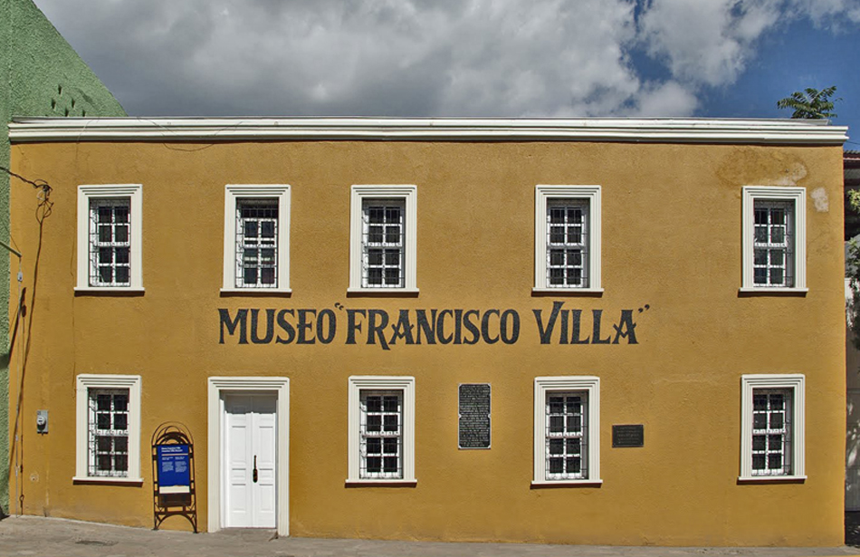
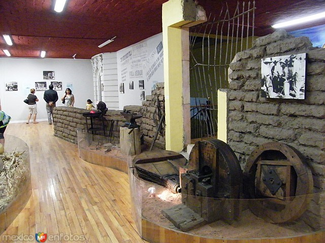

Hidalgo del Parral, Chihuahua
La Capital del Mundo
Museo Francisco Villa
Desde esta casa fue asesinado a lo lejos Francisco Villa en 1923. En el año 2000 el inmueble es remodelado para utilizar sus dos niveles como museo. A través de objetos históricos y originales, como la cama en donde fue colocado su cuerpo, y también de fotografías se narra esta parte de la historia mexicana. Cada año en el aniversario de la muerte de Pancho Villa, el 20 de julio, se hace una recreación de este trágico evento. Si coincides en la fecha, es un evento que debes presenciar.
Info:
Horario:
Martes a Domingo 10:00 AM – 5:00 PM.Costo de entrada:
Adultos $10 - Niños $5.Telefono:
627-525-3292Ubicacion:
Imagenes:


